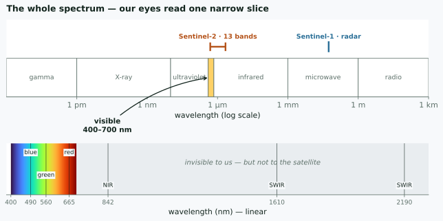
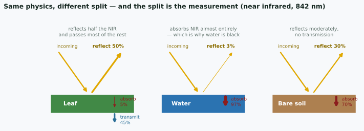
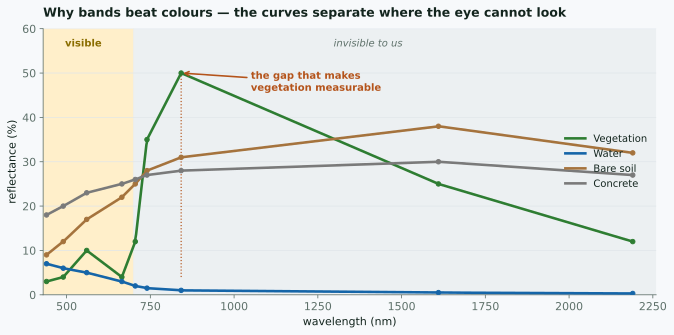
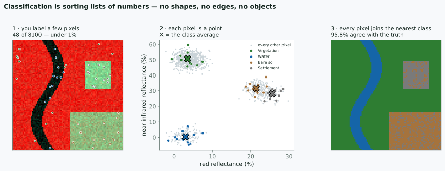

Day 1 — Concepts
20 August 2026
2 hours · no maps produced
Output: understanding why Earth Engine code looks the way it does.
2 hours · everyone types
Output: a land cover map of your own district, and files for your report.
Skip Day 1 and tomorrow’s scripts still run — until you change the area, hit an error, and have no way to guess where it came from.
You are already using a remote sensing instrument.
Light leaves the sun, hits a leaf, and some of it comes back. Your eye measures what came back. You never touch the leaf.
That is the whole idea. A satellite does the same thing from 786 km up. Everything else is detail — which wavelengths, how finely, how often.
Sunlight is a continuous range of wavelengths. There are no colours in it.
Your retina has three kinds of cone, sensitive around blue, green and red. Every colour you have ever seen is your brain interpreting three numbers.
The useful consequence
Colour is a property of the sensor, not of the world. Build a different sensor and you get different colours — and possibly a better answer.

Visible light is about 400–700 nm. The satellite measures out to 2190 nm — three times further than your eye reaches.
| our eye | Sentinel-2 | |
|---|---|---|
| detectors | 3 | 13 |
| blue | ~440 nm | 490 nm |
| green | ~540 nm | 560 nm |
| red | ~570 nm | 665 nm |
| near infrared | — | 842 nm |
| shortwave infrared | — | 1610, 2190 nm |
The rows without a left-hand entry are the point of the whole exercise.
Three things, always, and they must add to 100%:
reflected · absorbed · transmitted

The physics is identical for all three. Only the split differs — and that split is what the satellite measures.
Which is why water is black in the near infrared
It absorbs 97% of it. Nothing comes back, so the sensor records almost nothing — and that makes water the easiest thing on Earth to map.
A leaf passes 45% of the near infrared straight through. Light we cannot see goes through a leaf almost as if it were glass.
A satellite image is not a photograph. It is a grid of measurements.
Each cell holds how much energy came back, in one wavelength range, as an integer — a digital number.
B4 (red), a 4×4 corner of a Sentinel-2 scene
412 455 398 377
401 1122 1180 402 ← the bright cells are a rooftop
388 1195 1240 395
377 402 410 388Nothing here is red. Nothing here is a picture. It is a matrix.
A picture you can look at.
A number you can subtract, threshold, average over ten years, and compare between two dates.
Film could not do arithmetic. This is the reason remote sensing became digital, and the reason a computer can find change that your eye would miss.
Everything later in these two days is arithmetic on those matrices
Your screen has three channels: R, G, B. Sentinel-2 has thirteen bands.
So displaying an image is an act of choosing. You pick three bands and assign them to the three channels.
The second one is not a trick or a prettier version. It is the only way to put an invisible measurement in front of a human eye.
Healthy vegetation, roughly:
| wavelength | reflected |
|---|---|
| red, 665 nm | ~5% |
| near infrared, 842 nm | ~50% |
A leaf is dark in red — chlorophyll absorbs it, that is what photosynthesis is. Its internal cell structure scatters near infrared straight back.
Your eye stops at about 700 nm
The strongest signal a plant gives off is just past where your vision ends. Vegetation studies live in a band no human has ever seen.

In the visible band the four curves crowd together. Past 700 nm they separate. That is the whole argument for multispectral imaging.
In ['B8','B4','B3'], near infrared drives the red channel.
Once you know that, a false-colour image is faster to read than a natural one. Deforestation stops being subtle.
Stack the bands and look down through them at one cell:
pixel (1204, 887)
B2 B3 B4 B8 B11 B12
412 620 455 3180 1420 690Six numbers. A vector. That pixel’s signature.
Forest, water, rice paddy and rooftop each have a characteristic shape to that list — and the shape survives even when the brightness changes.
No image recognition. No shapes, no edges, no objects.
Just: which group of numbers is this list closest to?
Tomorrow you will do exactly this, in about fifteen lines of code.

48 labelled pixels out of 8100 — under 1% — and 95.8% of the rest land in the right class.
Vegetation and water sit far apart. Nothing can confuse them.
Bare soil and settlement overlap. Their numbers are genuinely similar — both are dry, bright surfaces with moderate infrared.
That overlap is your error, and no algorithm removes it
It shows up as speckle in the right-hand panel. When your accuracy stalls at 80%, look for the two classes sitting on top of each other in band space — then add a band that separates them, or merge them and say so.
Two bands give a flat scatter plot. Sentinel-2 gives you thirteen.
Soil and settlement that overlap in red and near infrared may separate in shortwave infrared, where moisture and material differ.
You are not choosing prettier colours. You are choosing axes that pull your classes apart.
| word | what it actually means |
|---|---|
| band | one wavelength range, one matrix |
| digital number | one measurement in one cell |
| RGB visualisation | choosing three matrices to show |
| false colour | putting an invisible band on screen |
| classification | grouping pixels by their list of numbers |
Everything from here is how to do that arithmetic without downloading anything.
Mapping land change for one district, ten years:
Not download speed
What changes is that there is no download at all.
The imagery is already there, already corrected.
You send an instruction — the computation travels to the data, not the other way round.
Consequence: the computing does not happen on your machine. That is what makes it feel strange at first.
| Data | Resolution | Since | Good for |
|---|---|---|---|
| Sentinel-2 | 10 m | 2015 | land cover, vegetation |
| Landsat 8/9 | 30 m | 2013 | long consistent records |
| Landsat 5/7 | 30 m | 1984 | decadal change |
| Sentinel-1 | 10 m | 2014 | radar — sees through cloud |
| CHIRPS | 5 km | 1981 | rainfall |
For Indonesia the radar row often decides things: half the year our sky is covered.
| Panel | Where | What |
|---|---|---|
| Scripts | top left | your saved scripts, examples |
| Docs | left tab | every function — this is the reference |
| Editor | centre | where you write |
| Console | top right | print output, error messages |
| Inspector | right tab | click the map → pixel values |
| Tasks | right tab | exports waiting to run |
Inspector — the fastest way to ask “is this number sensible?”
Click on the sea, see NDVI negative → your calculation is right.
Tasks — Export in a script does not export.
It only queues. You still click RUN in the Tasks tab.
This is the number one complaint at every GEE workshop. Without exception.
Counting starts at zero — mistake number one for anyone coming from spreadsheets.
This is it
Most confusing Earth Engine errors come from here — and none of them can be solved by copying someone else’s script.
your browser
var, plain numbers, if, for, text
Google’s computers
everything starting with ee.
An ee. object holds no value in your browser.
It holds a recipe: a note about a computation to be done later, over there.
Note b.add(1), not b + 1.
collection.size() is not a number. It is a promise to count, later, on the server.
if runs now, in the browser — judging something that does not exist yet.
The dangerous part: the script still “runs”. No clear error.
One sentence is enough
If the name starts with ee., do not use if, for, or plain + - * / on it.
Use its own methods: .add() .subtract() .gt() .map()
Almost every “why is my result empty?” starts here.
And once it clicks, the Earth Engine documentation stops being confusing — the whole API is organised around this split.
day-1-practiceprint your district nameprint(image) and look insideIf step 5 is confusing — that is the point:
what gets printed is not a picture, it is a description of one.
| Minutes | Output |
|---|---|
| 0–20 | cloud-free Sentinel-2 composite |
| 20–40 | NDVI map + time series chart |
| 40–70 | land cover map + accuracy figures |
| 70–95 | change map between two years |
| 95–120 | GeoTIFF & PNG for your report |
All for your own working area.
firmanhadi21.github.io/rs-change-detection/gee-js
Materials, scripts and references are all there.
GEE Webinar · Day 1 · Concepts